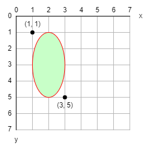

P5 library - Coordinates, angles & shapes
Coordinates
Use size(width, height) to set the width and the height of the canvas.
The x-axis goes from left to right but the y-axis goes from top to bottom.
There are two predefined variables to get the canvas dimensions: width and height. Generally you should use these variables to calculate coordinates instead of using hard-coded numbers because it will make it easier to read and understand your code. Also your code should continue working when the canvas is resized. For example, if the canvas is 300 by 200:
- use
width/2, height/2 instead of of 150, 100 for the center
- use
width, 0 instead of of 300, 0 for the top-right corner
- use
0, height instead of of 0, 200 for the bottom-left corner
- use
width, height instead of of 300, 200 for the bottom-right corner
For example size(8, 8) makes the canvas 8 pixels wide and 8 pixels high.

Angles
P5 uses radians instead of degrees.
One full turn is 2π (= 360°).
The angles are measured clockwise with zero being east.
You can convert degrees to radians with radians(degrees) and radians to degrees with degrees(radians).
Besides the usual PI, P5 also defines TWO_PI, HALF_PI, QUARTER_PI, and TAU which is 2π.
| Degrees | Radians |
|---|
| 0° | 0 |
| 45° | PI/4 = QUARTER_PI |
| 90° | PI/2 = HALF_PI |
| 135° | 3*PI/4 = 3*QUARTER_PI |
| 180° | PI |
| 225° | 5*PI/4 = 5*QUARTER_PI |
| 270° | 3*PI/2 = 3*HALF_PI |
| 315° | 7*PI/4 = 7*QUARTER_PI |
| 360° | 2*PI = TWO_PI = TAU |
Point
Use point(x, y) to draw a single point at coordinates (x, y).
For example the following code will draw this:
point(3, 5)
Line
Use line(x1, y1, x2, y2) to draw a line between coordinates (x1, y1) and (x2, y2).
For example the following code will draw this:
line(2, 6, 5, 1)

Triangle
Use triangle(x1, y1, x2, y2, x3, y3) to draw a triangle between coordinates (x1, y1), (x2, y2), and (x3, y3).
For example the following code will draw this:
triangle(2, 3, 5, 1, 4, 6)
Quad
Use quad(x1, y1, x2, y2, x3, y3, x4, y4) to draw a quadrilateral between coordinates (x1, y1), (x2, y2), (x3, y3), and (x4, y4).
For example the following code will draw this:
quad(1, 6, 2, 2, 5, 1, 6, 5)

Rect
To draw a rectangle specified by its top-left corner and dimensions, use rect_mode(CORNER) and rect(x, y, width, height).
For example the following code will draw this:
rect_mode(CORNER)
rect(1, 1, 2, 4)

To draw a rectangle specified by its center and dimensions, use rect_mode(CENTER) and rect(cx, cy, width, height).
For example the following code will draw this:
rect_mode(CENTER)
rect(2, 3, 2, 4)

To draw a rectangle specified by two opposite corners, use rect_mode(CORNERS) and rect(x1, y1, x2, y2).
For example the following code will draw this:
rect_mode(CORNERS)
rect(1, 1, 3, 5)

To draw rounded corners, specify one radius number (all the corners are identical) or four radius numbers (all the corners are different).
For example the following code will draw this:
no_fill()
stroke("red")
rect(0, 0, 400, 400) # no rounded corners
stroke("green")
rect(150, 150, 400, 400, 30) # all corners have a radius of 30
stroke("blue")
rect(300, 300, 400, 400, 10, 20, 40, 80) # each corner has a different radius
Square
square is a special case of rect where the width and the height are identical.
To draw a square specified by its top-left corner and size, use rect_mode(CORNER) and square(x, y, size).
For example the following code will draw this:
rect_mode(CORNER)
square(1, 1, 4)
To draw a square specified by its center and size, use rect_mode(CENTER) and square(cx, cy, size).
For example the following code will draw this:
rect_mode(CENTER)
square(3, 3, 4)
To draw rounded corners, specify one radius number (all the corners are identical) or four radius numbers (all the corners are different).
For example the following code will draw this:
no_fill()
stroke("red")
square(0, 0, 400) # no rounded corners
stroke("green")
square(150, 150, 400, 30) # all corners have a radius of 30
stroke("blue")
square(300, 300, 400, 10, 20, 40, 80) # each corner has a different radius
Ellipse
To draw an ellipse specified by its top-left corner and dimensions, use ellipse_mode(CORNER) and ellipse(x, y, width, height).
For example the following code will draw this:
ellipse_mode(CORNER)
ellipse(1, 1, 2, 4)

To draw an ellipse specified by its center and dimensions, use ellipse_mode(CENTER) and ellipse(cx, cy, width, height).
For example the following code will draw this:
ellipse_mode(CENTER)
ellipse(2, 3, 2, 4)

To draw an ellipse specified by two opposite corners, use ellipse_mode(CORNERS) and ellipse(x1, y1, x2, y2).
For example the following code will draw this:
ellipse_mode(CORNERS)
ellipse(1, 1, 3, 5)

Circle
circle is a special case of ellipse where the width and the height are identical.
Use circle(cx, cy, diameter) to draw a circle centered at coordinates (cx, cy).
For example the following code will draw this:
circle(3, 3, 4)
Arc
To draw an ellipse arc, use arc(cx, cy, width, height, start_angle, stop_angle, OPEN).
For example the following code will draw this:
arc(4, 2, 5, 7, radians(45), radians(180), OPEN)
To draw an ellipse chord, use arc(cx, cy, width, height, start_angle, stop_angle, CHORD).
For example the following code will draw this:
arc(4, 2, 5, 7, radians(45), radians(180), CHORD)
To draw an ellipse pie, use arc(cx, cy, width, height, start_angle, stop_angle, PIE).
For example the following code will draw this:
arc(4, 2, 5, 7, radians(45), radians(180), PIE)
Shape = Polygon
To draw an arbitrary polygon, start with begin_shape(), then add as many points as needed with vertex(x, y), and finish with end_shape(CLOSE).
For example the following code will draw a "C":
begin_shape()
vertex(2, 1)
vertex(5, 1)
vertex(5, 2)
vertex(3, 2)
vertex(3, 5)
vertex(5, 5)
vertex(5, 6)
vertex(2, 6)
end_shape(CLOSE)

It is also possible to draw complex polygons with holes and inner shapes:
- start with
begin_shape()
- add the outer shape with
vertex in clockwise order
- add each hole with
vertex in counter-clockwise order between begin_contour() and end_contour()
- add each inner shape with
vertex in clockwise order between begin_contour() and end_contour()
- end with
end_shape(CLOSE)
For example the following code will draw an "O" with a dot in the middle:
begin_shape()
# Outer square - clockwise
vertex(1, 1)
vertex(6, 1)
vertex(6, 6)
vertex(1, 6)
# Hole - counter-clockwise
begin_contour()
vertex(2, 2)
vertex(2, 5)
vertex(5, 5)
vertex(5, 2)
end_contour()
# Inner square - clockwise
begin_contour()
vertex(3, 3)
vertex(4, 3)
vertex(4, 4)
vertex(3, 4)
end_contour()
end_shape(CLOSE)
Bezier
To draw smooth and artistic looking curves, use bezier(start_x, start_y, cp1_x, cp1_y, cp2_x, cp2_y, stop_x, stop_y).
For example the following code will draw the left half of a heart:
bezier(
5, 6, # start point
1, 3, # 1st control point
4, 1, # 2nd control point
5, 3 # stop point
)
Note in particular how:
- the curve at the start point is tangent to the line passing through the start point and the 1st control point
- the curve at the stop point is tangent to the line passing through the stop point and the 2nd control point
Drag the dots hereunder to get a feeling for how the start, stop and control points interact with each other.
Text
Use text(string, x, y) to draw text at coordinates (x, y).
For example the following code will draw this:
text("I love P5!", 1, 4)
Check the Typography page to find out how to style text.